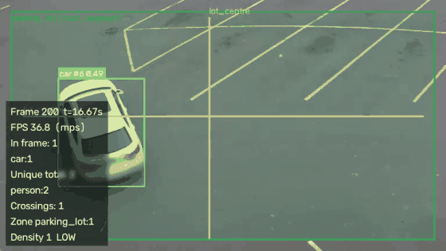

Measured demo · not a mock
SmartCity Vision
YOLOv8 + ByteTrack on a public parking-lot clip. Every number on this page came from running the pipeline — detections, unique counts, crossings, and latency.

Annotated output from the real run: class, track ID, confidence, unique totals.
Clip: Intel IoT DevKit person-bicycle-car-detection.mp4, 647 frames at 768×432.
Detections
344
boxes drawn across the clip
Unique objects
10
2 bikes · 3 cars · 5 people
Line crossings
3
lot_midline · A→B
MPS throughput
47.2
fps median, ByteTrack
What this is showing
- Track IDs persist (mean 29.7 frames/track, 0.98 continuity on this clip).
- Unique counting is keyed on identity, not boxes — 344 detections collapse to 10 objects.
- Peak congestion on this clip was LOW. Mean speed 81.5 px/s, uncalibrated.
- ONNX Runtime was slower on the mean than PyTorch on CPU (39.7 vs 29.7 ms) and tighter on the p95. That measurement is in the repo.
This page is a static replay
GitHub Pages cannot run YOLO. The live analyzer is dorian-smartcity-vision.fly.dev — click Analyze there and the server runs the model. Precision, recall, and mAP are not quoted: this clip has no ground-truth labels.